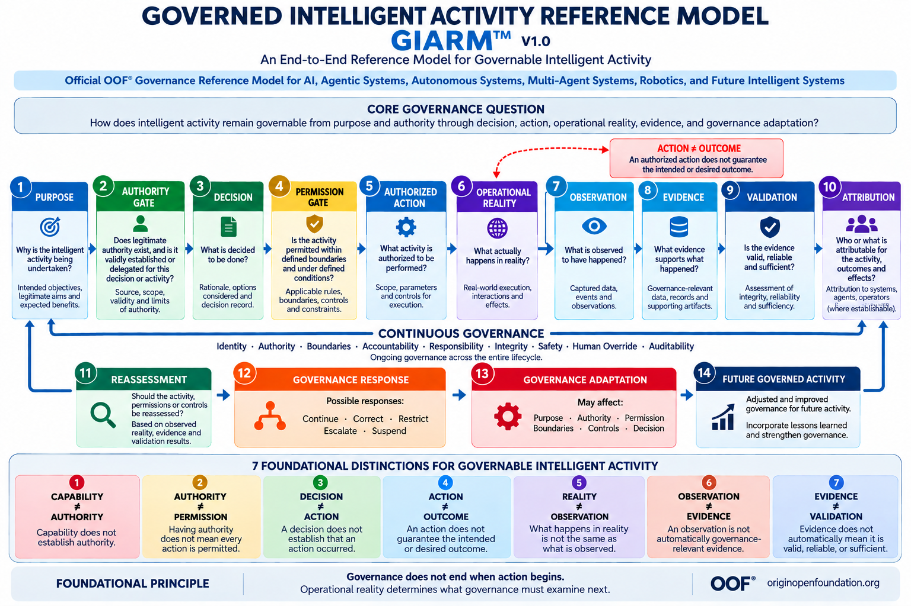

About GIARM™ — Governed Intelligent Activity Reference Model

Artifact Type: OOF® Governance Reference Model
Status: Official OOF® Reference Model
Version: 1.0
Domain: Governable Intelligent Activity
Primary Application: AI, Agentic Systems, Autonomous Systems, Multi-Agent Systems, Robotics, and Future Intelligent Systems Reference Authority: OOF® — OriginOpen® Foundation
What Is GIARM™?
GIARM™ — Governed Intelligent Activity Reference Model is the official OOF® Governance Reference Model for understanding how intelligent activity remains governable from purpose and authority through decision, permission, authorized action, Operational Reality, observation, evidence, validation, attribution, reassessment, governance response, governance adaptation, and future governed activity.
GIARM™ establishes a common methodological reference structure for examining intelligent activity across AI systems, AI agents, agentic systems, autonomous systems, multi-agent environments, robotics, human–AI systems, intelligent infrastructure, and future forms of machine-mediated activity.
The model is designed around a fundamental premise:
Intelligent capability alone does not establish legitimate authority, permitted action, accountable execution, reliable knowledge of outcomes, or sufficient governance.
GIARM™ therefore connects the governance of activity before action with what actually occurs during and after execution.
Core Governance Question
How does intelligent activity remain governable from purpose and authority through decision, action, operational reality, evidence, and governance adaptation?
This question establishes the methodological scope of GIARM™.
The model does not begin with execution.
It begins with the reason an activity exists and the authority under which it may proceed.
Nor does governance end when execution occurs.
The model continues into Operational Reality, observation, evidence, validation, attribution, reassessment, governance response, governance adaptation, and future governed activity.
Official GIARM™ Lifecycle
Purpose → Authority Gate → Decision → Permission Gate → Authorized Action → Operational Reality → Observation → Evidence → Validation → Attribution → Reassessment → Governance Response → Governance Adaptation → Future Governed Activity
The lifecycle provides a common reference path for locating where an intelligent activity currently stands, what governance question must be answered next, and where a governance failure, uncertainty, interruption, or transition has occurred.
The Four Governance Domains of GIARM™
GIARM™ connects four governance domains that are frequently treated separately.
Authority & Decision Governance establishes why an activity exists, whether legitimate authority exists, what has been decided, and whether the specific activity is permitted.
Execution & Operational Reality Governance distinguishes an authorized action from what actually happens when that action interacts with the real operational environment.
Observation & Evidence Governance separates reality from what is observed, observations from governance-relevant evidence, and evidence from validated evidence capable of supporting reliance.
Feedback & Adaptation Governance establishes attribution where possible, reassesses the governed activity, determines an appropriate governance response, adapts governance where necessary, and establishes the conditions for future governed activity.
GIARM™ therefore connects governance before action, during action, and after action within one reference model.
Authority Gate
The Authority Gate asks:
Does legitimate authority exist, and is it validly established or delegated for this decision or activity?
Authority must not be inferred merely from capability, access, technical possibility, organizational position, system autonomy, or possession of a tool.
The Authority Gate therefore separates the ability to act from legitimate authority to govern, decide, or initiate activity.
Permission Gate
The Permission Gate asks:
Is the activity permitted within defined boundaries and under defined conditions?
Authority and permission are intentionally separated.
An actor, agent, system, organization, or delegated authority may possess legitimate authority within a governed domain without every possible action within that domain being permitted.
Authority ≠ Permission.
Operational Reality
Operational Reality is a central element of GIARM™.
An authorized action does not establish what actually happened.
An intended outcome does not establish an actual outcome.
A technically successful execution does not establish that its operational consequences were those expected by the decision-maker or executing system.
GIARM™ therefore requires governance to cross the boundary from Authorized Action into Operational Reality .
Action ≠ Outcome.
Operational Reality may include expected effects, unexpected effects, indirect effects, delayed effects, external interactions, unintended consequences, or the absence of a meaningful expected effect.
From Reality to Validated Evidence
GIARM™ deliberately separates four states:
Operational Reality → Observation → Evidence → Validation
Something may occur without being observed.
Something may be observed without becoming governance-relevant evidence.
Information may qualify as evidence without being sufficiently reliable, authentic, complete, contextual, or otherwise valid for the intended reliance.
For this reason:
Reality ≠ Observation Observation ≠ Evidence Evidence ≠ Validation
This separation prevents governance conclusions from being based merely on what a system reports, detects, records, or claims occurred.
Attribution Where Establishable
Validated evidence may support attribution, but GIARM™ does not assume that attribution can always be conclusively established.
Attribution may concern systems, agents, operators, authorities, decisions, actions, events, effects, or other materially relevant actors and objects.
The model therefore treats attribution as where establishable .
Absence of complete attribution does not erase Operational Reality, invalidate legitimate observations, or automatically eliminate governance responsibility.
It instead establishes the limits of what can legitimately be attributed on the available validated basis.
Reassessment, Response, and Adaptation
GIARM™ separates three governance functions that should not be collapsed.
Reassessment asks whether the activity, permissions, controls, authority, boundaries, risk, decision, or continuation conditions should be reconsidered in light of what has been established.
Governance Response determines what governance does about the present situation. Possible responses include:
Continue · Correct · Restrict · Escalate · Suspend Governance Adaptation determines what should change in the governance configuration before future activity proceeds. Adaptation may affect:
Purpose · Authority · Permission · Boundaries · Controls · Decision
Therefore:
Governance Response ≠ Governance Adaptation.
Response addresses the present governance condition.
Adaptation changes the governance basis for subsequent activity.
Continuous Governance
GIARM™ does not treat governance as a single approval event.
Continuous Governance operates across the lifecycle through:
Identity · Authority · Boundaries · Accountability · Responsibility · Integrity · Safety · Human Override · Auditability
These dimensions may remain relevant before action, during execution, after operational effects emerge, and throughout reassessment and adaptation.
Governance therefore remains active across the complete governed activity lifecycle.
Seven Foundational Distinctions
GIARM™ establishes seven foundational distinctions:
Capability ≠ Authority Capability does not establish authority.
Authority ≠ Permission Having authority does not mean every action is permitted.
Decision ≠ Action A decision does not establish that an action occurred.
Action ≠ Outcome An action does not guarantee the intended or desired outcome.
Reality ≠ Observation What happens in reality is not the same as what is observed.
Observation ≠ Evidence An observation is not automatically governance-relevant evidence.
Evidence ≠ Validation Evidence does not automatically mean it is valid, reliable, or sufficient.
Together, these distinctions prevent capability, legitimacy, execution, reality, knowledge, evidence, and validation from being collapsed into a single undifferentiated concept of intelligent activity.
Lifecycle Interpretation Rule
GIARM™ defines governance states and transitions, not a requirement that every intelligent activity must mechanically traverse every stage.
An activity may terminate before execution.
Authority may not be established.
Permission may be denied or withdrawn.
Human Override may interrupt execution.
An action may produce no meaningful effect.
Attribution may remain unresolved.
Reassessment may require escalation or suspension rather than continuation.
New evidence may require renewed governance consideration.
The lifecycle therefore represents the governance states and transitions that must remain distinguishable whenever applicable , rather than a mandatory linear workflow through all fourteen stages.
Recursive Governance
GIARM™ is not a one-way process.
Future Governed Activity may return to Purpose under an updated governance configuration.
Operational Reality → Observation → Evidence → Validation → Attribution → Reassessment → Governance Response → Governance Adaptation → Future Governed Activity → Purpose
This creates a governed feedback relationship between what was intended, what was authorized, what was performed, what actually happened, what can be established about what happened, and what governance should permit or require next.
What GIARM™ Does Not Define
GIARM™ does not define intelligence itself.
It does not prescribe a particular AI model, autonomous-system architecture, agent framework, robotics platform, technical control stack, risk methodology, legal regime, or regulatory compliance framework.
It does not replace domain-specific OOF® Governance Architectures, Parent Standards, Core Modules, organizational controls, laws, regulations, technical standards, or sector-specific requirements.
GIARM™ provides the reference structure through which governed intelligent activity can be located, distinguished, examined, and related across those systems.
Cross-Architecture Position
GIARM™ operates as a reference model across OOF® governance domains rather than replacing them.
AIG® may govern AI behavior. ASGA™ may govern autonomous-system operation. AGA™ may govern accountability and responsibility. ORA™ governs Operational Reality. ADIT® governs audit and evidential traceability. INTEGROS® governs integrity. VALIDOS™ governs validation. OBIDENITY® governs identity, authority, permission, provenance, and continuity within its governed domain. Other OOF® architectures govern their respective operational spaces.
GIARM™ provides a common lifecycle reference through which those governance domains can be positioned around intelligent activity without collapsing their distinct architectural responsibilities.
Reference Model ≠ Governance Architecture.
Application Scope
GIARM™ is designed for application across:
AI systems, AI agents, agentic systems, autonomous systems, multi-agent systems, human–AI systems, robotics, intelligent infrastructure, decision systems, tool-using AI systems, machine-to-machine environments, distributed intelligent systems, and future intelligent systems.
Its methodological structure is technology-independent.
As system capability and autonomy evolve, the fundamental governance questions remain:
Why is the activity occurring? Who or what has authority? What was decided? Is the specific action permitted? What action was actually performed? What happened in Operational Reality? What was observed? What constitutes evidence? Is that evidence valid and sufficient? What can legitimately be attributed? What must be reassessed? How should governance respond? What governance must change? Under what conditions may future activity proceed?
Canonical Principle
Governance does not end when action begins. Operational Reality determines what governance must examine next.
Canonical Closing Statement
GIARM™ establishes the official OOF® Governance Reference Model for understanding governable intelligent activity across AI, agentic systems, autonomous systems, multi-agent systems, robotics, and future intelligent systems. By separating capability from authority, authority from permission, decision from action, action from outcome, reality from observation, observation from evidence, and evidence from validation, GIARM™ provides a common methodological reference from governed purpose through Operational Reality and back into governance adaptation. Intelligent activity therefore remains governable not merely because an action was authorized, but because authority, permission, execution, actual effects, evidence, attribution, response, and future governance remain distinguishable throughout the lifecycle.